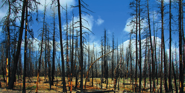

¿Qué repercusiones tendría para la población de las ciudades costeras la fusión de los casquetes polares debido al cambio climático causado por el aumento del efecto invernadero?
Observa la imagen y responde.

Bosque quemado
a. ¿Qué problema medioambiental ha podido causar este daño?
b. ¿Cómo piensas que ha sucedido?
c. ¿Qué acciones podrías realizar para contribuir a evitar este problema?
La emisión a la atmósfera de óxidos de nitrógeno y de algunos hidrocarburos no quemados por los motores de combustión de los vehículos ocasiona un tipo de contaminación que se denomina smog. Investiga, citando las fuentes consultadas, sus consecuencias para las personas.
¿El agujero de ozono es realmente un agujero en la estratosfera? Justifica tu respuesta.
El científico mexicano Mario Molina recibió el premio Nobel de Química en 1995.
a. ¿Por qué investigaciones le otorgaron este premio?
b. ¿Qué relación hay entre la capa de ozono y los CFC?
c. ¿Por qué están prohibidos la producción, el uso y la comercialización de los CFC en la Unión Europea si este territorio está muy alejado de la Antártida?
Elabora una lista que contenga acciones individuales que puedas realizar en tu vida diaria para ahorrar energía y reducir la contaminación por su uso.
¿Crees que reciclar materiales contribuye a reducir la contaminación atmosférica? Justifica tu respuesta empleando fuentes contrastadas.
¿Qué son las olas? Investiga cómo se forman y cita las fuentes consultadas.
¿Qué son las corrientes oceánicas? ¿Por qué se originan? Investiga y consulta solo en la superficie de los océanos. Indica qué fuentes has consultado.
¿Qué son las mareas? ¿Crees que se dan a la vez en todas las costas del planeta? Justifica tu respuesta.
El agua salobre se caracteriza por tener una salinidad intermedia entre el agua de mar y el agua dulce. ¿En qué lugares de España podemos encontrar este tipo de agua? ¿Cómo se origina?
¿Cuáles son las semejanzas y diferencias entre los ríos y los torrentes? ¿Y entre los lagos y las lagunas?
Investiga, citando las fuentes consultadas, qué son los acuíferos. ¿Qué interés tienen para el ser humano?
Investiga la localización y las características de los siguientes glaciares: glaciar Perito Moreno, inlandis de la Antártida, inlandis de Groenlandia y glaciar del Aletsch. A continuación, clasifícalos en glaciares alpinos o glaciares en casquete. Indica las fuentes consultadas.
¿Cuáles son las causas del movimiento del agua en el ciclo del agua?
Asocia los números de la imagen a estos nombres: escorrentía, infiltración, precipitación, evaporación y condensación.